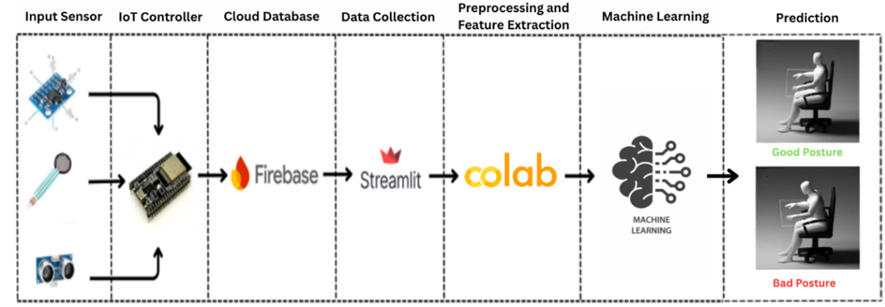
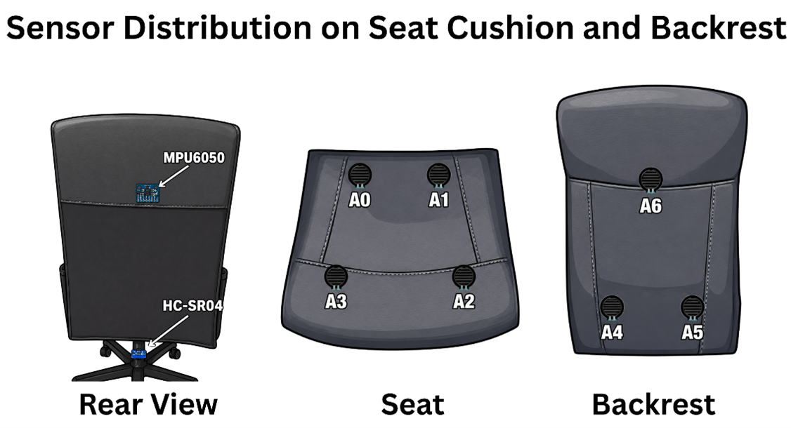
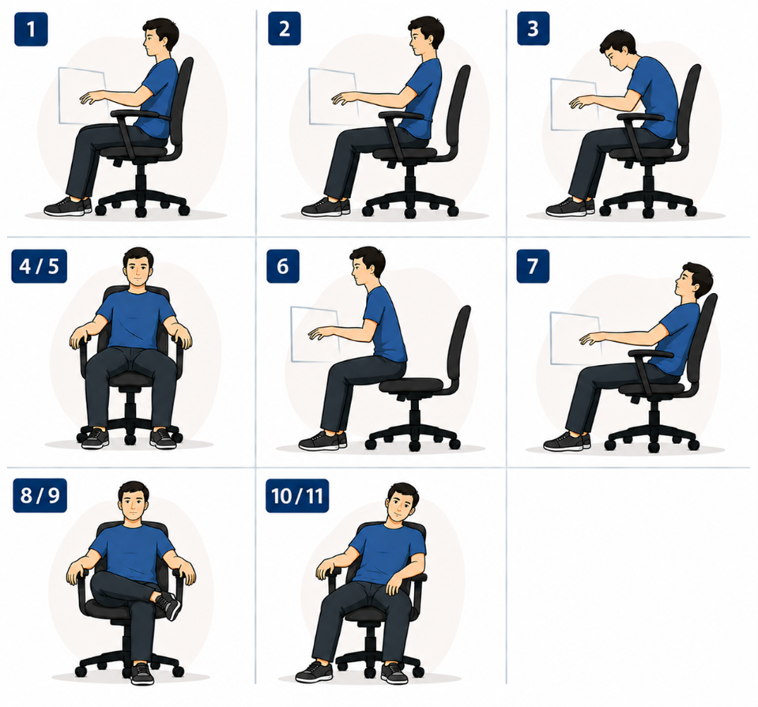
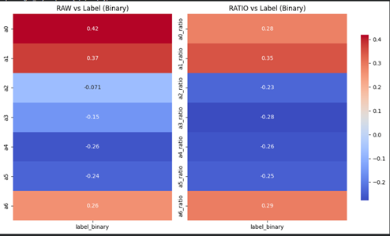
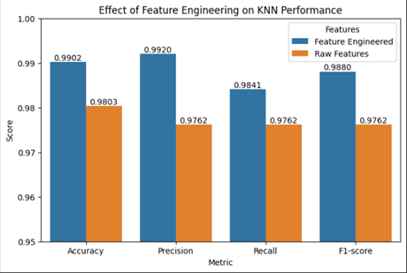
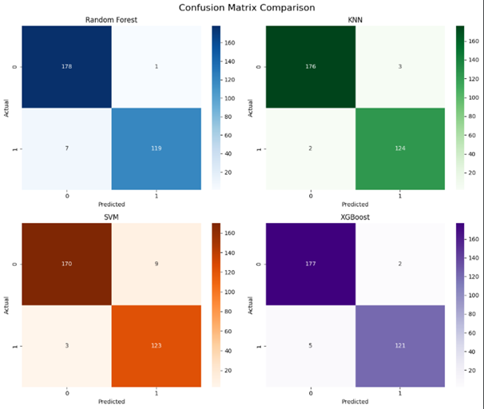

An IoT-based smart chair system that monitors sitting posture in real-time using machine learning, achieving 99% classification accuracy with a feature-engineered KNN model.
Poor sitting posture is a growing health concern, especially among students and professionals who spend prolonged hours at their desks. This project addresses that problem by developing a Smart Chair Posture Classification System — an end-to-end IoT and machine learning solution that monitors sitting posture in real-time and classifies it automatically.
The system combines embedded hardware (ESP32 microcontroller with distributed pressure sensors), cloud data storage (Firebase), and a Python-based machine learning pipeline with a Streamlit dashboard for real-time visualization and monitoring. Multiple ML models were trained and compared, with the feature-engineered KNN model achieving the best overall performance at approximately 99% accuracy.
The system operates through a multi-stage pipeline — from raw sensor data collection at the hardware level to machine learning classification and real-time dashboard visualization. The architecture ensures seamless data flow from the physical chair to the end-user interface.
Complete workflow from pressure sensor data collection through ESP32, Firebase cloud storage, data preprocessing, feature engineering, ML model training, and real-time posture prediction displayed on the Streamlit dashboard.
The hardware setup consists of multiple pressure sensors strategically distributed across the chair seat and backrest. Each sensor captures localized pressure values that correspond to specific body contact points, enabling the system to differentiate between various sitting postures based on pressure distribution patterns.

Pressure sensors distributed across the seat and backrest areas capture real-time pressure data that forms the input features for the ML classification model. The ESP32 reads analog sensor values and transmits them wirelessly to Firebase.
The dataset was built by recording sensor readings across multiple sitting posture variations. Postures were categorized into distinct classes — including ideal upright posture and several non-ideal posture types — to train the classification model on real-world sitting behaviors.

The dataset contains multiple sitting posture variations categorized into ideal and non-ideal posture classes. Each class was carefully labeled and balanced to ensure robust model training and evaluation across all posture types.
Before model training, extensive exploratory data analysis was performed to understand sensor data distributions, feature correlations, and posture-related patterns. This analysis guided the feature engineering process and informed model selection decisions.

Visualization of feature relationships and sensor data distributions revealed key patterns that differentiate posture classes. These insights drove the feature engineering strategy that significantly improved model accuracy.
Feature engineering played a critical role in boosting model performance. By creating derived features from raw sensor data — such as pressure ratios, zone aggregations, and statistical features — the models were able to capture more nuanced posture characteristics that raw data alone could not express.

Feature engineering dramatically improved KNN model performance across all evaluation metrics — accuracy, precision, recall, and F1-score — confirming the importance of domain-driven feature creation in ML workflows.
Key Finding: The feature-engineered KNN model achieved the best overall performance with approximately 99% accuracy and strong classification consistency across all evaluation metrics. This made KNN the clear winner over Random Forest, SVM, and XGBoost for this specific classification task.
Four machine learning algorithms were systematically evaluated: Random Forest, K-Nearest Neighbors (KNN), Support Vector Machine (SVM), and XGBoost. Each model was trained on both raw and feature-engineered datasets, with performance compared across accuracy, precision, recall, and F1-score metrics.

Confusion matrices for Random Forest, KNN, SVM, and XGBoost models reveal classification performance across all posture classes. KNN produced the most balanced classification performance with the lowest misclassification rate after feature engineering optimization.
Best Model — KNN: KNN produced the most balanced classification performance with the lowest misclassification rate after feature engineering optimization. Its strong generalization and consistent results across all posture classes made it the ideal choice for real-time deployment.
The completed system demonstrates a successful integration of IoT hardware, cloud infrastructure, and machine learning — delivering real-time posture monitoring with high classification accuracy.